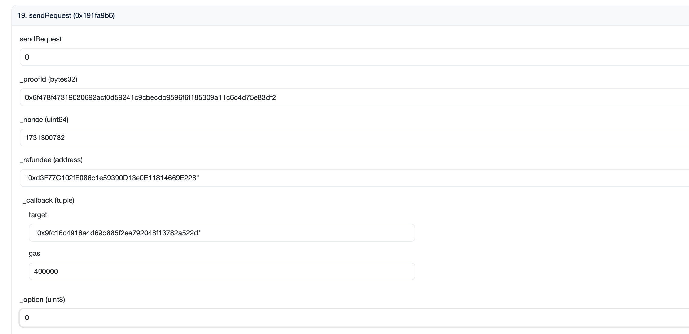
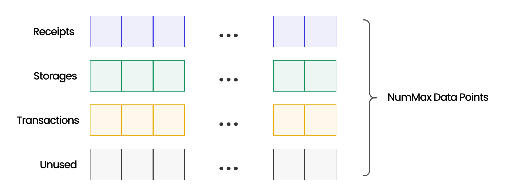

Introduction
Brevis is a highly efficient ZK coprocessor that empowers smart contracts to read from the full historical on-chain data from all supported blockchains and run customizable computations in a completely trust-free way. With the power of trust-free historical data, Brevis enables exciting new use cases like data-driven DeFi, user retention and engagement features, trust-free active liquidity management, omnichain activity-based identity, and many more. Read this blog for examples.
Integrating your dApp with Brevis only takes three simple steps:
- Data Access: Smart contracts, through Brevis’s APIs, can trustlessly access the full historical on-chain data, such as states, transactions, and events, from Ethereum and other chains.
- Computation: Developers then can build and deploy their customized business logic as application circuits without any prior knowledge of ZK using Brevis’s SDK. Brevis runs the computation and generates a ZK proof off-chain for the results.
- Using the Results: The computation results, along with the ZK proof, are submitted back on-chain for application smart contracts to seamlessly verify and consume.
Check out this short intro video to get an idea of what Brevis does:

You can also check out a concrete example of Uniswap v4 trading fee discount hook built with Brevis SDK.

In the following sections, we break down these steps with an end-to-end workflow.
Brevis coChain
Brevis can operate both in the “pure-ZK” and “OP” (aka coChain) models.
In the “pure-ZK” model, ZK proofs for data access and computation results are required to be generated upfront and submitted to the smart contract applications for ZK verification and app-specific processing. While the pure-ZK model provides simplicity and a trustless framework to work from, it is not without its own set of drawbacks:
- High Proof Generation Costs and Limited Scalability: While Brevis delivers world-leading performance in ZK Coprocessing and is confident in the innovations of ZK performance optimization, we must acknowledge the fundamental computational overhead introduced by ZK at this current stage. The costs of ZK proof generation and the resulting delays still present challenges. These costs ultimately contribute to a suboptimal user experience and act as barriers to the widespread adoption of data-driven dApps.
- Inability to Generate Proofs for Some Key Use Cases: Within the pure-ZK model, it is extremely challenging to generate proofs of non-existence. For example, proving that a user did not engage in a transaction with a specific protocol using ZK is very difficult. It would require a comprehensive ZK proof encompassing every transaction across all historical blocks—a feat that is practically infeasible. However, non-existence proofs can be utilized in important use cases such as new user acquisition, identity, account abstraction, and compliance.
These limitations, if left unaddressed, render ZK Coprocessors impractical for numerous high-value applications, especially those involving substantially large amounts of data and users, where maintaining a minimal cost per user is crucial.
This is why we are introducing Brevis coChain (OP Model).
.png)
Brevis coChain is a Proof-of-Stake (PoS) blockchain featuring on-Ethereum staking and slashing functionalities. It accepts coprocessing requests from smart contracts and “optimistically” generates coprocessing results through PoS consensus. These PoS-generated results are submitted to blockchains as “proposals” that are subject to be “challenged” via Zero-Knowledge (ZK) proofs. Successful ZK-proof challenges will trigger the slashing of the corresponding validators’ stakes directly on Ethereum. If no challenge is initiated, the results can be used by dApps directly without incurring ZK proof generation costs. Additionally, Brevis coChain is set to integrate with EigenLayer, empowering developers to dynamically adjust the level of crypto-economics security used in the proposal stage. This fusion of crypto-economics and ZK proofs not only ensures the secure and trustless nature of Brevis but also provides developers with a versatile tradeoff space to explore so they can design according to their specific use case.
Also as an important note, developers will be able to seamlessly integrate with Brevis coChain with no extra effort required. By leveraging the Brevis SDK, you only need to write the application’s business logic once. Then, you have the flexibility to deploy your applications in either the “pure-ZK” model or the coChain model.\
Brevis App Workflow
To build a Brevis-powered dApp, developers need to implement the following three things using Brevis’s SDK:
- The Data Access Module to specify the historical blockchain data needed by the App Contract.
- The App Circuit to specify the computation logic to run on the specified historical on-chain data.
- The App Contract to receive and process the ZK-verified or coChain-verified computation results.
These three implemented modules are highlighted in Blue in the following workflow diagram:
.png)
The diagram illustrates how these modules interact with Brevis. In this section we’ll only give a high-level walkthrough of the application flow with a more detailed explanation provided in the following sections.
The entry point of a Brevis-powered dApp is the App Service component, which receives input from users or operators. For example, an App Service of a DEX calculating the trading volume of a batch of traders during a certain period of time will accept a list of wallet addresses and an interested time interval as input parameters.
Then, the App Service is expected to obtain all the data that is needed, according to the application’s business logic, through an off-chain blockchain data indexing solution such as Dune Analytics. Continuing with the DEX example, the Data Access Module in App Service will obtain all trade transactions of specified traders during the specified time period.
Note that Brevis is not an off-chain data indexing and query platform. Instead, Brevis’s purpose is to generate ZK proofs to convince the application smart contracts that 1) the raw data obtained from off-chain indexing solutions do exist in the history of the blockchain and 2) the corresponding computation results on top of this data is correct.
With the raw blockchain data available, a ZK proof can be generated to show that both the computation of the application’s business logic and the on-chain data dependency are valid and correct. The App Circuit’s proof generation process can be hosted as part of the App Service as shown in the diagram. The historical on-chain data validity proof generation is hosted by Brevis Service. In this deployment model, the computation proof that is generated by the App Circuit will be sent to Brevis Service along with the raw blockchain data that this computation is dependent on. Brevis Service will then combine these two proofs into a single one that simultaneously asserts both the validity of the data and the computation results. In the context of the DEX example, the final proof can be used to convince a verifier that a certain user did make (say) 350 trades on the DEX and the total trading volume by adding all trades up is (say) $3M. Note that the proof generation of both the App Circuit and Brevis Service can be migrated to a decentralized prover network and Brevis coChain also.
Finally, the computation results and the corresponding ZK proof will be verified on-chain in Brevis Contracts. Once the verification is successful, Brevis Contracts will call the callback function on the App Contract, which will handle the results by matching it with the original request. This will complete the entire asynchronous coprocessor computation flow.
Next, we discuss each of the steps in more detail.
Data Access Module
First, let’s walk through the workflow for adding historical receipt/tx/storage data to your app via the Brevis TypeScript SDK which offers a convenient way for NodeJS to interact with the prover service and Brevis’ system.
High-level system diagram.png)
Install the Dependency
npm install brevis-sdk-typescript
Adding Source Data
Initialize a Proof Request to Your Prover Service
import { ProofRequest, Prover } from 'brevis-sdk-typescript';
// Assuming you started your prover service on port 33247, this is how you
// initialize a client in your NodeJS program to interact with it.
const prover = new Prover('localhost:33247');
const proofReq = new ProofRequest();
Add the Data to the Proof Request
Depending on your project, you may want to first query an indexer, such as Dune, an Ethereum node, or your own service, to acquire the raw data (such as transactions) according to your business logic. This part is not handled by the Brevis SDK.
Note: So why can’t we just use the indexer data directly on chain?
If you directly post the data from an indexer to your contract without any validity proofs, your users would be trusting the entity who posted this data to behave correctly. Brevis’s core role is to replace this trust of data validity on one party with a ZK proof so no one can fabricate data and computation results.
After you acquire the raw data, you add the data to the proofReq. The data you add here is closely tied to how you allocate data slots for your circuit and is available in CircuitInput passed in to your Define function. how to write an application circuit
proofReq.addReceipt(
new ReceiptData({
tx_hash: '0x53b37ec7975d217295f4bdadf8043b261fc49dccc16da9b9fc8b9530845a5794',
fields: [
new Field({
log_index: 3,
is_topic: false,
field_index: 0,
}),
new Field({
log_index: 3,
is_topic: true,
field_index: 2,
}),
new Field({
log_index: 2,
is_topic: true,
field_index: 1
}),
],
}),
);
proofReq.addStorage(
new StorageData({
block_num: 18233760,
address: '0x5427FEFA711Eff984124bFBB1AB6fbf5E3DA1820',
slot: '0x0000000000000000000000000000000000000000000000000000000000000000',
}),
);
proofReq.addTransaction(
new TransactionData({
hash: '0x6dc75e61220cc775aafa17796c20e49ac08030020fce710e3e546aa4e003454c',
}),
);
Add Custom Inputs
If you define custom inputs for your circuit, you need to fully assign them here in ProofRequest.
// circuit custom input definition
type AppCircuit struct{
// example custom field `MerkleProof`
MerkleProof [8]sdk.Bytes32
}
// assigning custom input in typescript
proofReq.setCustomInput({
// key names match what we defined in AppCircuit
MerkleProof: [
// type of the field should also match what we define in AppCircuit
asBytes32('0x1111111111111111111111111111111111111111111111111111111111111111'),
asBytes32('0x2222222222222222222222222222222222222222222222222222222222222222'),
// ...
],
});
Note: The keys of the custom input object you add in typescript matches what you define in your app circuit. The first letter can also be lower cased, e.g.
merkleProofin the above example
Custom Input Types
The types of the custom input you assign in ProofRequest must match what you define in your app circuit. All primitive circuit data types are allowed here through the following functions.
For example, if your AppCircuit is defined as
type AppCircuit struct {
MyUint32Input sdk.Uint32
MyUint248Input1 sdk.Uint248
MyUint248Input2 sdk.Uint248
MyUint521Input1 sdk.Uint521
MyUint521Input2 sdk.Uint521
MyInt248Input sdk.Int248
MyBytes32Input sdk.bytes32
}
In your Typescript program you would need to assign the custom input as
proofReq.setCustomInput({
MyUint32Input1: asUint32('1'),
MyUint248Input1: asUint248('123'),
// 0x prefixed hex input is also allowed
MyUint248Input2: asUint248('0xabcdef'),
MyUint521Input1: asUint521('123'),
// 0x prefixed hex input is also allowed
MyUint521Input2: asUint521('0xabcdef'),
MyInt248Input: asInt248('-123'),
MyBytes32Input: asBytes32('0x3333333333333333333333333333333333333333333333333333333333333333'),
});
The data you add here will be available for use in your Application Circuit.
Read more about Source Data Types.
Note: For advanced developers, there is also a way to access the receipt/tx/storage data via the Go SDK. See Go Workflow for details.
Application Circuit
The application circuit is a Go program and is the core part of your Brevis app. It is where you process the data you obtained in the data access step with your intended business logic. Even though you are indeed writing a ZK circuit, you don’t actually need to know anything about ZK. This is because Brevis’s SDK has abstracted away many low-level circuit framework details and only exposes easy-to-use APIs. When certain low-level details have to be exposed, we will explain what needs to be done clearly.
Dependencies
go get github.com/brevis-network/brevis-sdk
How to Build a Circuit
To implement an application circuit, you need to:
- Define a struct that houses your custom inputs (custom inputs are optional). This is where you specify things like user wallet addresses, trading pairs, time periods or other “variables” that are going to be different across each query to your App Service.
- Implement the
AppCircuitinterface that has two methodsAllocateandDefine. - Build your computation logic in
Definewith the help ofsdk.CircuitAPIandsdk.DataStream - Output the computation result using various output methods from
sdk.CircuitAPI
The circuit must implement the sdk.AppCircuit Interface:
type AppCircuit interface {
Define(api *CircuitAPI, input DataInput) error
Allocate() (maxReceipts, maxSlots, maxTransactions int)
}
Defineis where you write your circuit logic.Allocatedefines the maximal number of receipts/storage slots/transactions your application is going to use. Note that the higher the upper bounds are, the slower the application circuit is going to run for the same number of actual inputs. Read more on Allocate to understand the best practices for writing your app circuit.
Here is a demonstration of a custom app circuit in action:
package app
import "github.com/brevis-network/brevis-sdk/sdk"
// Must be a struct
type AppCircuit struct{
// Custom inputs. These fields must be exported (first letter capitalized)
// These are the inputs that can be different for each proof you generate
// using the same circuit
MyInputVar sdk.Uint248
MyInputBytes32 sdk.Bytes32
}
// The struct AppCircuit must implement the sdk.AppCircuit interface
var _ sdk.AppCircuit = &AppCircuit{}
func (c *AppCircuit) Allocate() (maxReceipts, maxStorage, maxTransactions int) {
// When we return 32, 64, 0, it means that we are allowing our circuit to process
// a maximum of 32 receipts, 64 storages, and 0 transactions
return 32, 64, 0
}
var ConstEventID = ParseEventID(/* 0x123456... */)
func (c *AppCircuit) Define(api *sdk.CircuitAPI, input sdk.DataInput) error {
// You can access the data you added through app.AddReceipt etc.
receipts := sdk.NewDataStream(api, input.Receipts)
// Checking some the receipts properties against some constants
// In this example, by checking these, you are proving to your
// contract that you have checked that all events have a certain
// event ID
sdk.AssertEach(receipts, func(receipt sdk.Receipt) Variable {
return api.Equal(receipt.Fields[0].EventID, ConstEventID)
})
// You can then perform various data stream operations on the data.
// You can find the usage of specific API later.
blockNums := sdk.Map(receipts, func(r sdk.Receipt) sdk.Uint248 {
return api.ToUint248(r.BlockNum)
})
minBlockNum := sdk.Min(blockNums)
values := sdk.Map(receipts, func(r sdk.Receipt) sdk.Uint248 {
return api.ToUint248(r.Value)
})
sum := sdk.Sum(values)
// sdk.Reduce(...)
// sdk.GroupBy(...)
// and more ...
// You can output any number of computation results using sdk.OutputXXX APIs
// These results will be available for use in your contract when the proof
// is verified on-chain
api.OutputUint(64, minBlockNum)
api.OutputUint(248, sum)
// more output...
return nil
}
Circuit API
sdk.CircuitAPI is supplied to your circuit as a parameter of your Define function. It houses many building blocks for circuit constructions. All control flows, logic operations, and math must go through circuit APIs.
- Global Checks:
AssertInputsAreUnique - Hashing:
StorageKey,StorageKeyOfArrayElement,StorageKeyOfStructFieldInMapping - Output:
OutputUint,OutputBytes32,OutputBool,OutputAddress - Casting:
ToBytes32,ToUint521,ToUint248,ToInt248
Type-Specific Circuit APIs
The sdk.CircuitAPI struct has several submodules for type specific operations: Uint32, Uint248, Uint521, Int248, Bytes32.
Not every type’s API has the same set of operations. In general you will be looking to use the sdk.Uint248 type most of the time. The following is a list of operations supported for Uint248:
- Arithmetics:
Add,Sub,Mul,Div,Sqrt - Logic:
Select,And,Or,Not - Comparison:
IsZero,IsEqual,IsLessThan, IsGreaterThan - Binary:
ToBinary,FromBinary - Assertions:
AssertIsEqual,AssertIsDifferent,AssertIsLessThanOrEqual
An exhaustive list of circuit functions can be found under Circuit SDK Reference > Circuit API.
Data Stream API
The data stream API allows you to perform data analysis computations over receipts/storages/transactions in a MapReduce style. To create a DataStream, simply wrap it around the data:
txs := sdk.NewDataStream(api, input.Transactions)
mapped := sdk.Map(txs, func(tx sdk.Transaction) sdk.Uint248 { /* ... */ })
reduced := sdk.Reduce(
mapped, // data to reduce on
ConstUint248(0), // reducer base case
func(acc sdk.Uint248, current sdk.Uint248) (newAcc sdk.Uint248) { /* reducer */ },
)
You can find a detailed listing of the data stream functions in Data Stream API doc.
Circuit Inputs
The input CircuitInput parameter passed into your Define function is built from the data preparation step. It contains the Receipts, StorageSlots, and Transactions that your circuit wants to process. Read more on these types.
Circuit Outputs
You can output your computation results and use them in your contract through the output functions. The values you output will be exposed to your app contract.
api.OutputUint(64, someVariable)
api.OutputAddress(someAddress)
// and more ...
Circuit Testing
The brevis-sdk/test package contains some testing utilities.
During development: use test.IsSolved to help in debugging circuit logic.
Before deployment: use test.ProverSucceeded and test.ProverFailed to check that your proofs are complete and sound.
Read more about these utilities in Circuit Testing.
Compiling & Proving
Note: This section applies if your Brevis app uses the “pure-ZK” model. If you want to deploy your Brevis app under the coChain model, you may skip this section.
We recommend to host your circuit as a separate process as it can take up much more computing resource than typical web servers.
Spin Up a Prover for Your AppCircuit
The fastest way to spin up a prover is to use the prover service module in the Go SDK. prover.NewService automatically compiles your circuit and sets up proving/verifying keys if your circuit changes or if it’s your first time compiling. Read more about Prover Service.
proverService, err := prover.NewService(&AppCircuit{}, config)
// listen to port 33247
proverService.Serve(33247)
Note: You can also opt for manually compile & prove with Go
Calling the Prover From Node.js
High-level system diagram
Sending the Proof Request to Your Prover
const proofRes = await prover.prove(proofReq);
Error handling
if (proofRes.has_err) {
const err = proofRes.err;
switch (err.code) {
case ErrCode.ERROR_INVALID_INPUT:
console.error('invalid receipt/storage/transaction input:', err.msg);
// handle invalid data input...
// this error means some of your input
// data (receipt/storage/transaction) is not found or not supported
// e.g. you added a transaction of type other than 0 or 2
break;
case ErrCode.ERROR_INVALID_CUSTOM_INPUT:
console.error('invalid custom input:', err.msg);
// handle invalid custom input assignment...
break;
case ErrCode.ERROR_FAILED_TO_PROVE:
console.error('failed to prove:', err.msg);
// handle failed to prove. usually marking some record as failed
break;
}
}
Note: If you receive ERROR_INVALID_INPUT, check your data against Limits and Performance to see if any data exceeds the limits.
Note:
Tip
If you want to reuse the proofs you can do serialize and deserialize ProveResponse by:
import { ProveResponse } from 'brevis-sdk-typescript';
const serialized = proofRes.serialize();
const restored = ProveResponse.deserialize(serialized)
Sending Your Proof to Brevis
import { Brevis } from 'brevis-sdk-typescript';
// A client for interacting with Brevis' systems
const brevis = new Brevis('appsdkv3.brevis.network:443');
// submit() takes
// the proof request
// proof response
// source chain ID where the data you want to use in your computation is from
// destination chain ID where your want to post the proof to
const brevisRes = await brevis.submit(proofReq, proofRes, 1, 11155111);
const id = brevisRes.id;
const fee = brevisRes.fee;
console.log(id, fee)
Pay for Your Request on the Data Source Chain
Call BrevisRequest.sendRequest() with the id acquired from brevisRes and the fee (in native token). contract addresses
Note that this step is not needed if your application is partnered with a Brevis prover that serves off-chain requests.
Wait for Your App Contract to be Called
Since Brevis calls your app contract’s callback function when the final proof is submitted, you can listen to your app contract’s event. Or, you could use the built-in function to wait for the final transaction submission.
// wait() takes the request id and a destination chain id
brevis.wait(brevisRes.id, 11155111);
Contract Integration
The final step is to write a smart contract that handles the ZK-attested results. To streamline this process, you can use the contract SDK and implement the handleProofResult function to process the circuit outputs.
npm install brevis-contracts
Here is an example of a typical app contract:
// SPDX-License-Identifier: MIT
pragma solidity ^0.8.18;
import "@openzeppelin/contracts/access/Ownable.sol";
import "@brevis-network/contract-sdk/lib/BrevisApp.sol";
contract MyAppContract is BrevisApp, Ownable {
bytes32 public vkHash;
constructor(address brevisRequest)
BrevisApp(brevisRequest)
Ownable(msg.sender) {}
// BrevisQuery contract will call our callback once Brevis backend submits
// the proof.
function handleProofResult(
bytes32 _vkHash,
bytes calldata _circuitOutput
) internal override {
// We need to check if the verifying key that Brevis used to verify the
// proof generated by our circuit is indeed the verifying key generated
// from compiling our app circuit. This ensures that the _circuitOutput
// is authentic.
require(vkHash == _vkHash, "invalid vk");
(address minBlockNum, uint64 sum) = decodeOutput(_circuitOutput);
// other logic that uses the proven data...
}
// Suppose in the app circuit you have:
// api.OutputUint(64, minBlockNum)
// api.OutputUint(248, sum)
// Then, we can decode the output the following way
function decodeOutput(
bytes calldata output
) internal pure returns (uint64, uint248) {
uint64 minBlockNum = uint64(bytes8(output[0:8]));
uint248 sum = uint248(bytes31(output[8:8+31]));
return (minBlockNum, sum);
}
function setVkHash(bytes32 _vkHash) external onlyOwner {
vkHash = _vkHash;
}
}
Handling Circuit Outputs in Contract
Your app contract needs to inherit the BrevisApp contract and call its constructor with the address of the BrevisProof contract (Deployment Addresses). It also needs to override the abstract method handleProofResult.
function handleProofResult(
bytes32 _requestId,
bytes32 _vkHash,
bytes calldata _appCircuitOutput
) internal virtual {}
Checking the Verifying Key
The vk hash you get from the Compiling & Setup step uniquely identifies of your circuit. You should save the vk hash in your contract. When handling callbacks from the BrevisRequest contract, you must check that the vkHash matches your expected one.
Reading the Circuit Output
The output calls in your circuit definition are packed in the form of abi.encodePacked(...). The order of the variables is the same as the order you call the output APIs in the circuit.
Pay Request Fee
If an application is partnered with the Brevis system to serve requests with a customized fee plan, it can skip this step and send off-chain requests directly to the Brevis gateway.
Otherwise, for most applications, the user needs to send the request with fee in native tokens on-chain to the BrevisRequest contract.
Paying the Fee
You need to call BrevisRequest.sendRequest with the requestId and the feeValue (as transaction value) you acquire from in the previous step when you call app.PrepareRequest in Go. The parameter _callback is where you specify your app contract address.
function sendRequest(
bytes32 _proofId,
uint64 _nonce,
address _refundee,
Callback calldata _callback,
uint8 _option // bitmap 0: zk, 1: op bvn, 2: op avs, 3: op bvn and avs
) external payable;
struct Callback {
address target;
uint64 gas;
}
Or, you can send a raw transaction using the calldata you acquire from app.PrepareRequest as the transaction call data and the feeValue as the transaction value.
Refunding a Fee after Timeout
requestTimeout a state variable in BrevisRequest. If there is no proof submitted within the requestTimeout, you can call BrevisRequest.refund to refund the fee back to the _refundee you initially specified when calling sendRequest
coChain Mode
A Brevis app can be deployed in the “pure-ZK” and “OP” (aka coChain) models. This section provides a detailed introduction to the two deployment models.
The aforementioned sections have introduced the workflow for the “pure-ZK” model. In this section, we describe how to deploy your Brevis app under the coChain model to enable use cases like “proof-of-completeness” and achieve fine-grained tradeoffs between trust assumptions and costs/latency.
To deploy in the coChain model, the developer should first follow the same steps as in the “pure-ZK” model to define data access, write an application circuit, and integrate with the smart contract (the “Compiling & Proving” part can be skipped for the coChain Model since no actual proving is needed if no challenge occurs).
Then, the developer needs to contact the Brevis team and send their application circuit source code offline to the Brevis team. The Brevis team will wrap the circuit as a Go plugin and dynamically deploy the plugin in our coChain PoS network. Once it’s done, the validators in our coChain network will be able to dry run the circuit and verify the circuit outputs are indeed calculated with the on-chain data as defined in the data access module (the coChain network will also verify the on-chain data). Then, the coChain-verified computation result can be used in the developers’ app smart contract.
There are some differences when using the Brevis SDK in the coChain model as compared to the “pure-ZK” model:
- In the coChain model, the app service is not required to actually run the circuit proving. The dry run result is enough for submission to Brevis with an option parameter set with OP-related values.
- In the coChain model, the option parameter in
BrevisRequest.sendRequestshould be set with OP-related values. - In the coChain model, the
handelOpProofResultinterface should be implemented by the developer’s custom app smart contract instead of thehandelProofResultinterface as in the “pure-ZK” model. - In the coChain model,
challengeWindowshould be set in the developer’s custom app smart contract. Note that each request won’t be fulfilled on-chain until the corresponding challenge window has passed.
Contract Integration in the coChain Model
As described above, a few additional things should be implemented in the contract to develop a contract that integrates with the coChain mode.
Below is an example that extends the MyAppContract in the previous section to make it usable for the coChain mode.
// SPDX-License-Identifier: MIT
pragma solidity ^0.8.18;
contract MyCoChainAppContract is MyAppContract {
// Handle optimistic proof result.
// This example handles optimistic results in the same way as handling zk results,
// your app can choose to do differently.
function handleOpProofResult(
bytes32 _vkHash,
bytes calldata _circuitOutput
) internal override {
handleProofResult(_vkHash, _circuitOutput);
}
/**
* @notice config params to handle the optimistic proof result
* @param _challengeWindow The challenge window to accept optimistic results.
* 0: POS, maxInt: disable optimistic result
* @param _sigOption bitmap to express expected sigs. bit 0 is bvn, bit 1 is avs
*/
function setBrevisOpConfig(
uint64 _challengeWindow,
uint8 _sigOption
) external onlyOwner {
brevisOpConfig = BrevisOpConfig(_challengeWindow, _sigOption);
}
}
Tutorial
This tutorial will walk you through a minimal example of the aforementioned workflow for developing a Brevis app. Check out this repo for some more advanced examples, such as trading volume proof on Uniswap, TWAP, etc. You can also check out this helpful video tutorial on building a trading volume-based fee discount feature in Uniswap v4.
The example in this tutorial only supports pure ZK mode. Please follow this previous section to support coChain mode
The App: Proving Token Transfer
Our app’s goal is to allow anyone to prove to our on-chain contract that an Ethereum address has made a USDC token transfer whose amount is more than 500 USDC.
We will implement this app step by step. The finished version is also available in this repo.
How can an ERC-20 Transfer be proven?
When an ERC-20 token transfer is made, a Transfer event will be emitted in the transaction receipt. By reading this log, we can find From in topics and Value in data.
In the tutorial application, we are going to write an Brevis app checking that the value more than is 500000000 (500 with decimal 6) for a transaction receipt.
Contents
Link building-the-app-circuit.md
Link writing-the-app-contract.md
Link putting-everything-together.md
Building the App Circuit
Our app’s goal is to allow anyone to prove to an on-chain smart contract that an address made a USDC transfer with volume more than 500 USDC. We are going to implement this app step by step. You can find the finished version in this Github repo.
Writing the Circuit
Edit circuit.go and write our circuit
package circuits
import (
"github.com/brevis-network/brevis-sdk/sdk"
)
type AppCircuit struct{}
var USDCTokenAddr = sdk.ConstUint248("0xA0b86991c6218b36c1d19D4a2e9Eb0cE3606eB48")
var minimumVolume = sdk.ConstUint248(500000000) // minimum 500 USDC
var _ sdk.AppCircuit = &AppCircuit{}
func (c *AppCircuit) Allocate() (maxReceipts, maxStorage, maxTransactions int) {
// Our app is only ever going to use one storage data at a time so
// we can simply limit the max number of data for storage to 1 and
// 0 for all others
return 32, 0, 0
}
func (c *AppCircuit) Define(api *sdk.CircuitAPI, in sdk.DataInput) error {
receipts := sdk.NewDataStream(api, in.Receipts)
receipt := sdk.GetUnderlying(receipts, 0)
// Check logic
// The first field exports `from` parameter from Transfer Event
// It should use the second topic in Transfer Event log
api.Uint248.AssertIsEqual(receipt.Fields[0].Contract, USDCTokenAddr)
api.Uint248.AssertIsEqual(receipt.Fields[0].IsTopic, sdk.ConstUint248(1))
api.Uint248.AssertIsEqual(receipt.Fields[0].Index, sdk.ConstUint248(1))
// Make sure two fields uses the same log to make sure account address linking with correct volume
api.Uint32.AssertIsEqual(receipt.Fields[0].LogPos, receipt.Fields[1].LogPos)
// The second field exports `Volume` parameter from Transfer Event
// It should use Data in Transfer Event log
api.Uint248.AssertIsEqual(receipt.Fields[1].IsTopic, sdk.ConstUint248(0))
api.Uint248.AssertIsEqual(receipt.Fields[1].Index, sdk.ConstUint248(0))
// Make sure this transfer has minimum 500 USDC volume
api.Uint248.AssertIsLessOrEqual(minimumVolume, api.ToUint248(receipt.Fields[1].Value))
api.OutputUint(64, api.ToUint248(receipt.BlockNum))
api.OutputAddress(api.ToUint248(receipt.Fields[0].Value))
api.OutputBytes32(receipt.Fields[1].Value)
return nil
}
Testing the Circuit
Edit circuit_test.go for circuit testing. First, we assign correct values to the circuit input. Then, we use test.ProverSucceeded to test if our circuit can successfully generate a proof using the correct input.
// ...
func TestCircuit(t *testing.T) {
rpc := "RPC_URL"
localDir := "$HOME/circuitOut/myBrevisApp"
app, err := sdk.NewBrevisApp(1, rpc, localDir)
check(err)
txHash := common.HexToHash(
"0x8a7fc50330533cd0adbf71e1cfb51b1b6bbe2170b4ce65c02678cf08c8b17737")
app.AddReceipt(sdk.ReceiptData{
TxHash: txHash,
Fields: []sdk.LogFieldData{
{
IsTopic: true,
LogPos: 0,
FieldIndex: 1,
},
{
IsTopic: false,
LogPos: 0,
FieldIndex: 0,
},
},
})
appCircuit := &AppCircuit{}
appCircuitAssignment := &AppCircuit{}
circuitInput, err := app.BuildCircuitInput(appCircuit)
check(err)
///////////////////////////////////////////////////////////////////////////////
// Testing
///////////////////////////////////////////////////////////////////////////////
test.ProverSucceeded(t, appCircuit, appCircuitAssignment, circuitInput)
}
Spin Up a Prover for Your AppCircuit
proverService, err := prover.NewService(&AppCircuit{}, config)
// ...
err = proverService.Serve(33247)
// ...
Then, we run the main program to start up the prover
go run main.go
Console Output
>> compiling circuit
10:34:52 INF compiling circuit
ignoring uninitialized slice: Input_StorageSlots_Toggles []frontend.Variable
ignoring uninitialized slice: Input_Transactions_Toggles []frontend.Variable
10:34:52 INF parsed circuit inputs nbPublic=6 nbSecret=1089
ignoring uninitialized slice: Input_StorageSlots_Toggles []frontend.Variable
ignoring uninitialized slice: Input_Transactions_Toggles []frontend.Variable
ignoring uninitialized slice: Input_StorageSlots_Toggles []frontend.Variable
ignoring uninitialized slice: Input_Transactions_Toggles []frontend.Variable
commit output: rounds 1, data len 480, padded len 1088
10:34:52 INF building constraint builder nbConstraints=608462
circuit compiled in 408.001292ms, number constraints 608462
circuit digest 0x1dfdcf1616c15230b5bcd7555570e324647743ca9111e968a6519e33136b036e
trying to read setup from cache...
no setup matching circuit digest 0x0e299aa204fde71d5da9b94e7b905857ba1ce912ec37ad00f54f1bb2fdea0705 is found in /Users/xxx/circuitOut
>> setup
size system 608468
size lagrange 1048576
init SRS disk cache dir /Users/xxx/kzgsrs
fetching srs ignition from file
srs ignition not found in file
downloading file https://kzg-srs.s3.us-west-2.amazonaws.com/kzg_srs_100800000_bn254_MAIN_IGNITION
writing srs ignition file
srs iginition ready
setup done in 2.392068s
///////////////////////////////////////////////////////////////////////////////
// vk hash: 0x25d2751bfc09b1222b834f3043762dad7e1591671f8c03456996cabe53a95c71
///////////////////////////////////////////////////////////////////////////////
67143336 bytes written to /Users/xxx/circuitOut/0x1dfdcf1616c15230b5bcd7555570e324647743ca9111e968a6519e33136b036e/pk
34368 bytes written to /Users/xxx/circuitOut/0x1dfdcf1616c15230b5bcd7555570e324647743ca9111e968a6519e33136b036e/vk
>> scan local storage: /Users/xxx/circuitOut/input/input/data.json
>> finish scan local storage: /Users/xxx/circuitOut/input/input/data.json
>> serving prover REST API at port 33257
>> serving prover GRPC at port 33247
Note: command line tool curl is required for downloading srs ignition file.
At the same time, you may download it through browser directly and put it into your srs file folder. Brevis sdk will use $HOME/kzgsrs/kzg_srs_100800000_bn254_MAIN_IGNITI as file path if srsDir configuration is $HOME/kzgsrs.
The VK Hash
Notice the highlighted log that look like this
///////////////////////////////////////////////////////////////////////////////
// vk hash: 0x25d2751bfc09b1222b834f3043762dad7e1591671f8c03456996cabe53a95c71
///////////////////////////////////////////////////////////////////////////////
This is the hash of your circuit’s verifying key. You must store this hash in your contract and check it when handling contract callbacks. More on this in later steps.
Writing the App Contract
Your app contract needs to inherit the BrevisApp abstract contract. You can manually copy the required contracts from the quickstart repo, or install Brevis contracts via
yarn add brevis-contracts
```solidity
// SPDX-License-Identifier: MIT
pragma solidity ^0.8.18;
import "@openzeppelin/contracts/access/Ownable.sol";
import "./lib/BrevisApp.sol";
// Accept both ZK- and OP-attested results.
contract TokenTransfer is BrevisApp, Ownable {
event TransferAmountAttested(uint64 blockNum, address account, uint256 volume);
bytes32 public vkHash;
constructor(address _brevisRequest) BrevisApp(_brevisRequest) Ownable(msg.sender) {}
// BrevisQuery contract will call our callback once Brevis backend submits the proof.
// This method is called with once the proof is verified.
function handleProofResult(bytes32 _vkHash, bytes calldata _circuitOutput) internal override {
// We need to check if the verifying key that Brevis used to verify the proof
// generated by our circuit is indeed our designated verifying key. This proves
// that the _circuitOutput is authentic
require(vkHash == _vkHash, "invalid vk");
(address accountAddr, uint64 blockNum, uint256 volume) = decodeOutput(_circuitOutput);
emit TransferAmountAttested(blockNum, accountAddr, volume);
}
function decodeOutput(bytes calldata o) internal pure returns (address, uint64, uint256) {
uint64 blockNum = uint64(bytes8(o[0:8]));
address userAddr = address(bytes20(o[8:28]));
uint256 volume = uint256(bytes32(o[28:60]));
return (userAddr, blockNum, volume);
}
// vkHash represents the unique circuit app logic
function setVkHash(bytes32 _vkHash) external onlyOwner {
vkHash = _vkHash;
}
}
Checking the Verifying Key Hash
Notice that we have a vkHash storage variable in the contract:
bytes32 public vkHash;
By setting this variable to our previously computed vkhash, when Brevis calls our app contract, we can check the proof, that Brevis has verified before calling our contract, is indeed generated by our circuit.
Handling Proof Result
handleProofResult is where you process the computation result output from your circuit. There are two steps we must do before we use the proven data:
- Check if the param
_vkHashmatches our stored vkHash. This verifies the identity of the circuit which produced the computation result. - Decode the param
_circuitOutput.
The output values in your circuit definition are packed in the form of abi.encodePacked(...). The order of the variables is the same as the order you call the output APIs in the circuit.
We know in our circuit we did:
api.OutputUint(64, api.ToUint248(receipt.BlockNum))
api.OutputAddress(api.ToUint248(receipt.Fields[0].Value))
api.OutputBytes32(receipt.Fields[1].Value)
Therefore, this is how we decode _circuitOutput in the contract:
uint64 blockNum = uint64(bytes8(o[0:8]));
address userAddr = address(bytes20(o[8:28]));
uint256 volume = uint256(bytes32(o[28:60]));
If you are following this example to build the project, you can deploy this contract. If you are just doing research and would like to see a deployed version, see the deployed contract on Sepolia.
Putting Everything Together
Finally, we will see how we can call our prover to generate an app proof, submit to Brevis, and have Brevis contracts calling our app contract with our circuit output.
Call Our Prover to Generate a Proof
Edit index.ts. Initialize two clients: one for talking to our prover, one for talking to Brevis.
const prover = new Prover('localhost:33247');
const brevis = new Brevis('appsdkv3.brevis.network:443');
Adding Data to Prove
To prove token transfer, we only need to add a receipt which emits the USDC Transfer event. In the below sample transaction receipt. We will use the first log in this receipt(LogPos 0). The second topic(FieldIndex 1) is “From” address. The first 32-byte data value(FieldIndex 0) is “TransferAmount”. By adding these two Fields in receiptData, the prover service is able to check amount and generate corresponding application circuit output.
.png)
// initialize a proof request to our prover
const proofReq = new ProofRequest();
// adding the USDC transfer tx receipt
proofReq.addReceipt(
new ReceiptData({
tx_hash: '0x8a7fc50330533cd0adbf71e1cfb51b1b6bbe2170b4ce65c02678cf08c8b17737',
fields: [
// `From` value
new Field({
log_pos: 0,
is_topic: true,
field_index: 1,
}),
// `Transfer Amount` value
new Field({
log_pos: 0,
is_topic: false,
field_index: 0,
}),
],
}),
);
Calling Our Prover
const proofRes = await prover.prove(proofReq);
index.ts#L63-L82 handles submitting proof request to our prover
Submitting Your Proof to Brevis
There are still several items left unproven in our custom circuit. They are:
- How do we know if the transaction receipt is valid at all?
- How do we know that the transaction is certainly on Ethereum?
- How do we know the the transaction happened in block 21146236?
When you submit the proof generated by your circuit, Brevis’s provers will wrap a proof around yours to further prove that the transaction is valid on the specified source chain and is certainly from the block we say it’s from.
const brevisRes = await brevis.submit(
proofReq,
proofRes,
1,
11155111,
QueryOption.ZK_MODE,
'BREVIS_PARTNER_KEY', // empty string if there is no partner key
'CALLBACK_ADDRESS' // used for brevis partner flow only, empty string if there is no partner key
);
await brevis.wait(brevisRes.queryKey, 1);
The arguments 1 and 11155111 are the chain ids of the data source chain and the “destination chain” that we want to post the final proof to, respectively
Now, run the program
ts-node index.ts
0x8a7fc50330533cd0adbf71e1cfb51b1b6bbe2170b4ce65c02678cf08c8b17737
TestVolume // brevis partner key: could be empty string
0x9fc16c4918a4d69d885f2ea792048f13782a522d // callback address: could be empty string
Click to see console output
Send prove request for 0x8a7fc50330533cd0adbf71e1cfb51b1b6bbe2170b4ce65c02678cf08c8b17737
proof: 0x......
query: proofId 0x6f478f47319620692acf0d59241c9cbecdb9596f6f185309a11c6c4d75e83df2 nonce 1731300782 waiting for payment. call BrevisRequest.sendRequest to initiate the payment
Note: If there is a partnership between the developer’s project and Brevis, the developer can hand over the corresponding BREVIS_PARTNER_KEY and CALLBACK_ADDRESS to Brevis gateway when using
submitprovided by Brevis SDK. Then you can skip the subsequent sendRequest on-chain transaction
Note: BREVIS_PARTNER_KEY and CALLBACK_ADDRESS are NOT required to send requests to the Brevis gateway. Developers can leave them as empty string
As we can see, our request is assigned a request id and the fee we are going to pay is 0 (this is only zero for the testnet). Our program is currently waiting for us to pay the fee.
Now, you can call BrevisRequest.sendRequest on the destination chain to pay for the proof. For demo purposes, we will just send the transaction through the Sepolia explorer. You can find the address of BrevisRequest under Contract Addresses. You may also find the sample contract here.

After the transaction is sent, it takes around two minutes for the transaction to be confirmed and Brevis’s final proof to be generated. We should see the console outputs keep updating.
...
query proofId 0x6f478f47319620692acf0d59241c9cbecdb9596f6f185309a11c6c4d75e83df2 nonce 1731300782 waiting for final tx
query proofId 0x6f478f47319620692acf0d59241c9cbecdb9596f6f185309a11c6c4d75e83df2 nonce 1731300782 success, tx 0x893098c7748d5d801e54bf64edb96383e26726ebdf9e25f54f56be7c532a7f8d
Circuit SDK Reference
Brevis App
sdk.BrevisApp is the framework around your custom circuit. It handles the conversion of your data to circuit inputs and interacting with Brevis’s system. To create a BrevisApp, use:
import "github.com/brevis-network/brevis-sdk/sdk"
app := sdk.NewBrevisApp(
1, // data source chain id
"RPC_URL", // corresponding chain RPC URL, you can find many here: https://chainlist.org/chain/1
"OUTPUT_DIR", // brevis sdk will save source data into OUTPUT_DIR/input/data.json for future reference
)
Adding Source Data
Source Data Types
The Brevis application circuit supports proving receipt, storage value, and transaction by adding TransactionData, ReceiptData, and StorageData. Developers only need to set up the *required values and the Brevis app will prepare the rest automatically.
ReceiptData
| Name | Type | Description |
|---|---|---|
| TxHash | common.Hash | Receipt's transaction hash (*required) |
| BlockNum | big.Int | Receipt's block number |
| BlockBaseFee | big.Int | Block base fee |
| MptKeyPath | big.Int | Rlp encoded receipt index using this |
| Fields | [LogFieldData] | Array of field information will be used in receipt (Usp to 4 fields in each receipt) |
LogFieldData
| Name | Type | Description |
|---|---|---|
| LogPos | uint | the log’s position in the receipt (*required) |
| IsTopic | bool | Whether the field is a topic (*required) |
| FieldIndex | uint | The index of the field in either a log’s topics or data. (*required) |
| Contract | common.Address | The contract from which the event is emitted |
| EventID | common.Hash | The event ID of the event to which the field belong (aka topics[0]) |
| Value | common.Hash | The value of the field in event, aka the actual thing we care about, only 32-byte fixed length values are supported. |
StorageData
| Name | Type | Description |
|---|---|---|
| BlockNum | big.Int | Block number used for storage value (*required) |
| BlockBaseFee | big.Int | Block base fee |
| Address | common.Address | Address used for storage value (*required) |
| Slot | common.Hash | Storage slot (*required) |
| Value | common.Hash | Storage value |
TransactionData
| Name | Type | Description |
|---|---|---|
| Hash | common.Hash | Transaction hash (*required) |
| BlockNum | big.Int | Receipt's block number |
| BlockBaseFee | big.Int | Block base fee |
| MptKeyPath | big.Int | Rlp encoded receipt index using this |
| LeafHash | common.Hash |
Hash of transaction raw data with rlp prefix. |
Note: As of now, brevis will only prove the existence of a transaction, stay tuned for more tx information is usable
Adding Source Data
The data you add here will be available to process in your app circuit.
app.AddReceipt(sdk.ReceiptData{...})
app.AddStorage(sdk.StorageData{...})
app.AddTransaction(sdk.TransactionData{...})
The maximum amount of Receipt/Storage/Transaction data you can add to each type is restricted by the maximum amount you define in your circuit’s Allocate function. read more
Each of the three types of data has an index within its type. For example, if you call AddStorage twice:
app.AddStorage(sdk.StorageData{/* StorageA */})
app.AddStorage(sdk.StorageData{/* StorageB */})
Then StorageA will be at index 0, and StorageB will be at index 1.
Pin an Index
You can also pin a piece of data to a specific index. For example, this will pin TransactionA at index 2.
app.AddTransaction(sdk.TransactionData{/* TransactionA */}, 2)
Let’s see pinning in a more complete example. Let’s say you defined your Allocate function to allocate 32 data for Receipt, 32 for Storage, and 64 for Transaction.
func (c *AppCircuit) Allocate() (maxReceipts, maxStorage, maxTransaction) {
return 32, 32, 32
}
Then, you added data queries to your BrevisApp instance:
app.AddReceipt(sdk.ReceiptData{/* ReceiptA */})
app.AddStorage(sdk.StorageData{/* StorageA */})
app.AddStorage(sdk.StorageData{/* StorageB */})
app.AddTransaction(sdk.TransactionData{/* TransactionA */})
// this one is fixed at index 2
const MyFixedSpot = 2
app.AddTransaction(sdk.TransactionData{/* TransactionB */}, MyFixedSpot)
The mental model of this would be:
.png)
Notice how there is an empty slot in transactions because we allocated 64 slots for transactions, but only added two. We also fixated TransactionB at index 2, so the slot index 1 remains empty. TransactionB will always be at index 2.
Accessing Data by Index in Circuit
Accessing data by index is closely related to how you allocate data slots. read more about Allocate
func (c *AppCircuit) Define(api *sdk.CircuitAPI, input sdk.CircuitInput) {
transactions := sdk.NewDataStream(input.Transaction)
// access transactionB directly
transactionB := transactions.Get(MyFixedSpot)
}
Building the CircuitInput
sdk.CircutiInput is the packaged data obtained from executing your data queries and converting them into circuit types. This is used in testing, compiling, and proving.
After you have added queries to your BrevisApp, call app.BuildCircuitInput with your circuit definition to build.
// if your circuit has custom inputs, you'll need to supply a correct assignment
// of those custom inputs
appCircuit := &AppCircuit{MyCustomInput: someCorrectValue}
circuitInput, err := app.BuildCircuitInput(appCircuit)
Submitting the Proof to Brevis
Note: Proof generation relies on a separate set of functions, but once you have a proof, your
BrevisAppinstance can handle submitting it to Brevis.
To submit your proof to Brevis, you need to first query Brevis RPC for the fee amount and acquire a requestId.
PrepareRequest Input
| Name | Type | Description |
|---|---|---|
| vk | VerifyingKey | application circuit verifying key |
| witness | witness.Witness | application circuit witness |
| srcChainId | uint64 | the id of data source chain |
| dstChainId | uint64 | the chain where the proven data is used |
| appContract | common.Address | developer’s contract callback address |
| callbackGasLimit | uint64 | Gas limit for contract callback |
| queryOption | queryOption | ZK_MODE: pure zk flow. recommended for developers. OP_MODE: supported by BVN. wip |
| brevisPartnerKey | string | not required. Developer can use empty string to skip this flow. |
calldata, requestId, nonce, feeValue, err := app.PrepareRequest(
vk,
witness,
srcChainId,
dstChainId,
refundee,
appContract,
callbackGasLimit,
gwproto.QueryOption_ZK_MODE.Enum(),
"")
PrepareRequest Output
| Name | Type | Description |
|---|---|---|
| calldata | []byte | transaction calldata |
| requestId | common.Hash | query key for future reference |
| nonce | uint64 | transaction parameter |
| feeValue | big.int | proving fee |
Submitting the Proof
err := app.SubmitProof(proof)
You can optionally supply success and error callbacks. Note that the option sdk.WithFinalProofSubmittedCallback makes SubmitProof non-blocking. If you want a blocking way to wait for final proof submission, use app.WaitFinalProofSubmitted.
// Choose one:
err := app.SubmitProof(proof, sdk.WithFinalProofSubmittedCallback(...)) // async
// Or
err := app.SubmitProof(proof)
tx, err := app.WaitFinalProofSubmitted(context.Background()) // blocks the routine
Paying the Fee
The provers in the Brevis network only start working after you pay the fee. To pay, call the sendRequest function on the BrevisRequest contract (address) with the feeValue you got from PrepareRequest.
Note: You can pay the fee any time after you acquire the
requestIdandfeeValuefromPrepareRequest. This process done in parallel withSubmitProofandWaitFinalProofSubmitted.
Note:
Tip: Reducing End-to-end Proof Generation Time
Once PrepareRequest is called AND Brevis receives the fee, Brevis starts proving the proofs that are independent from your proof. If your circuit is big and wants to minimize the proof generation time, you can call PrepareRequest first, then pay the fee. This allows your proof and Brevis’s proofs to be generated in parallel.
App Circuit Interface
Your circuit needs to implement the AppCircuit interface to be used with the Brevis SDK.
type AppCircuit interface {
Define(api *CircuitAPI, input CircuitInput) error
Allocate() (maxReceipts, maxStorage, maxTransactions int)
}
Define
Define defines your app circuit logic. The code you write in Define is a set of instructions that tells the framework “how to build the circuit”. You could use if statements and loops for constructing the circuit, but as soon as the circuit is compiled, meaning the ifs and loops are run to build the circuit, the wiring is set in stone and there is no more concept of ifs and loops.
The first parameter api *CircuitAPI contains a set circuit building blocks. Read more
The second parameter input CircuitInput contains the data you want to process in the circuit. You should only need to access input.Receipts, input.StorageSlots, and input.Transactions. more on these data types
Allocate
You need to declare your data “slot” allocations because circuit inputs cannot be dynamic like data structures in normal programs.
The only thing you need to worry about is that when you add data into BrevisApp using AddReceipt, AddStorageSlot, and AddTransaction, the number of items you add to each type cannot exceed (but can be less than) the number you declare for that type.
For example, if this is your Allocate function:
func (c *AppCircuit) Allocate() (maxReceipts, maxStorage, maxTransactions int) {
return 32, 0, 0
}
Then you can have a maximum of 1 receipt, 2 storage, and 3 transactions as data points. The sum of these values cannot exceed NumMaxDataPoints.
Note: The less slots you allocate, the better your circuit will perform. You should always aim for allocating the least amount of slots possible. If you intend to build multiple circuits for your use case, the slot allocations for these circuits don’t need to be the same.
Note: For performance optimization, allocate maxReceipts/maxStorage/maxTransaction as an integral multiple of 32. 0 is allowed. Brevis app will use NextPowerOf2(maxReceipts+maxStorage+maxTransaction) as NumMaxDataPoints
Here is a visualization that may help you develop a mental model:

Custom Inputs
Custom inputs, or more canonically, private inputs are what makes our proofs zero-knowledge and succinct. Consider the following use case:
We want to send some users gifts if they can prove to our gift sender contract that their addresses are included in the merkle root recorded in some other contract’s storage. This requires checking merkle proofs. But we don’t actually need to let our gift sender contract know about these merkle proofs as long as we generate ZK proofs that proves the statement “there exists merkle proofs from these leaves to this storage value (a merkle root) of the contract”. Such merkle proofs can be supplied as custom inputs.
type AppCircuit struct{
MerkleProof [8]sdk.Bytes32
}
// func (c *AppCircuit) Allocate() ...
// func (c *AppCircuit) Define() ...
Circuit Data Types
DataInput
CircuitInput is a parameter of your circuit definition function Define. The only thing you care about are the three lists of receipts/storages/transactions. You can treat the data in these three DataPoints lists as proven to be valid. This is because when you submit your proof to Brevis, the provers there will check this data for you.
type DataInput struct {
Receipts DataPoints[Receipt]
StorageSlots DataPoints[StorageSlot]
Transactions DataPoints[Transaction]
}
You can create a sdk.DataStream around the list you want to process or you can directly access them.
Note: Not every data point in the lists is necessarily valid. For example, if you allocate 3 slots for receipts but add only two receipts through
app.AddReceipt, then the last receipt item would remain empty. When using DataStream methods, e.g.sdk.NewDataStream(input.Receipts).Mean(...), empty checks are done for you so that when you do aggregation operations such asMean, you won’t account for data located at those empty slots. If you accessDataPointsdirectly (e.g. inputs.Receipts[3]), you are forgoing this automatic empty check.
CircuitVariable Data Types
You must use the data types specifically defined for circuit use. You can still use custom Go types for non-circuit operations, but anything that goes into CircuitAPI and DataStream functions are circuit data types. These variables can be casted to each other through casting (some are not convertible to others yet, please pay attention to the documentation of each casting function). The following pre-defined types all implement the CircuitVariable interface.
Primitive Types
sdk.Uint32
This type is the lowest cost type to use in circuit. It represents an unsigned integer up to 32 bits. You can perform arithmetics, comparisons, binary conversion, selection, and logic operations on it. This type could be useful in representing data like block number. If there are many comparisons, we recommend using Uint32 if you can ensure the value will not overflow.
sdk.Uint248
This type is the default type to use in circuit because it’s “native” to the underlying elliptic curve’s scalar field. It represents an unsigned integer up to 248 bits. It is the return type of other type’s operations (e.g. Bytes32’s ToBinary operation returns a list of Uint248). It is also used where boolean values are appropriate (e.g. the return type of IsEqual should be boolean but is represented using a Uint248 0 or 1). You can perform arithmetics, comparisons, binary conversion, selection, and logic operations on it. You should always prefer using Uint248 to represent data if possible.
sdk.Int248
This type supports representing negative numbers. Uses 1 bit as the sign bit, so the absolute value can only be up to 247 bits.
sdk.Uint521
This type supports arithmetics up to 521 bits. If you need to multiply two Uint248s and know that they can overflow, cast them to this type before doing the calculation. Note that this type internally uses field emulation and has much higher cost than Uint248 arithmetics. You should only use this whenever necessary.
sdk.Bytes32
This type is equivalent to solidity’s bytes32, and in turn, is also used where uint256 needs to be represented. The Value fields in Receipt.LogField, Transaction, and Storage are all this type. You can only perform comparison and selection over variables of this type. Bytes32 are used in many places instead of Uint521 for performance reasons because most of the time a Bytes32 can be down casted to Uint248 (e.g. when you know that Value field in StorageSlot that is actually a uint64 in a Solidity contract). Other times, we only use Bytes32 for equality checks (hashes, keys, etc…). You can always cast to Uint521 if you really need it.
Composite Types
sdk.List
Lists can hold CircuitVariables of a homogeneous type (e.g. sdk.List[sdk.Uint248]). List itself also implements the CircuitVariable interface. List is simply a Go slice under the hood, so you can use append() to add elements and list[i] to access elements.
sdk.Tuple2 ... sdk.Tuple8
There are 7 pre-defined Tuple types from size 2 to 8. This is your go-to method of defining your custom data structures. You can use any type that implements CircuitVariable in Tuple fields. Nested Tuples are also possible.
Note:
Tip:
If your Tuple gets too long, you can create a Go type alias for it to make your code more readable.
type MySchema = sdk.Tuple8[
sdk.Transaction,
sdk.Tuple2[Uint521, Uint521],
sdk.Int248,
sdk.Uint248,
sdk.Bytes32,
sdk.List[sdk.Uint248],
sdk.Uint248,
sdk.Receipt,
]
sdk.Receipt/sdk.StorageSlot/sdk.Transaction
These are the types of the input data of your app circuit.
// Receipt is a collection of LogField.
type Receipt struct {
BlockNum Uint32
// Block base fee
BlockBaseFee Uint248
// Receipt index indicator
MptKeyPath Uint32
Fields [NumMaxLogFields]LogField
}
// LogField represents a single field of an event.
type LogField struct {
// The contract from which the event is emitted
Contract Uint248
// The log position in receipt
LogPos Uint32
// The event ID of the event to which the field belong (aka topics[0])
EventID Uint248
// Whether the field is a topic (aka "indexed" as in solidity events)
IsTopic Uint248
// The index of the field. For example, if a field is the second topic of a log, then Index is 1; if a field is the
// third field in the RLP decoded data, then Index is 2.
Index Uint248
// The value of the field in event, aka the actual thing we care about, only 32-byte fixed length values are supported.
Value Bytes32
}
Note: For each transaction receipt, you can choose to use up to
NumMaxLogFieldsfields. Currently this limit is set to 3.
type StorageSlot struct {
BlockNum Uint32
// Block base fee
BlockBaseFee Uint248
// The contract to which the storage slot belong
Contract Uint248
// The storage slot
Slot Bytes32
// The storage slot value
Value Bytes32
}
type Transaction struct {
BlockNum Uint32
// Block base fee
BlockBaseFee Uint248
// Transaction index indicator
MptKeyPath Uint32
// Hash of rlpPrefix and transaction raw data
LeafHash Bytes32
}
Note: Currently, only transactions of type 0 (legacy) and 2 (dynamic fee) are supported.
Defining Constant Variables
You may declare constant variables in your circuit. Consider those the “hardwires” of your circuit. The sdk package contains some utility functions for this purpose. These functions are not a part of the Circuit API and should only be used outside of the circuit to initialize constant circuit variables.
// ConstUint248 initializes a constant Uint248. This function does not generate
// circuit wires and should only be used outside of circuit. Supports all int and
// uint variants, bool, []byte (big-endian), *big.Int, and string inputs. If
// input is string, this function uses *big.Int SetString function to interpret
// the string
ConstUint248(data interface{}) Uint248
// ConstUint521 initializes a constant Uint521. This function does not generate
// circuit wires and should only be used outside of circuit. Supports all int and
// uint variants, bool, []byte (big-endian), *big.Int, and string inputs. If
// input is string, this function uses *big.Int SetString function to interpret
// the string
ConstUint521(data interface{}) Uint521
// ConstInt248 initializes a constant Int248. This function does not generate
// circuit wires and should only be used outside of circuit. The input big int
// can be negativ
ConstInt248(data *big.Int) Int248
// ConstBytes32 initializes a constant Bytes32 circuit variable. Panics if the
// length of the supplied data bytes is larger than 32
ConstBytes32(data []byte) Bytes32
Circuit API
CircuitAPI
sdk.CircuitAPI is the top-level API that is passed to the user’s Define function. It houses many building-block functions that aim to speed up the circuit building process.
Global Checks
// AssertInputsAreUnique Asserts that all input data (Transaction, Receipt,
// StorageSlot) are different from each other
AssertInputsAreUnique()
Output Functions
Data output from the output functions are eventually exposed in your on-chain contracts.
// OutputBytes32 adds an output of solidity bytes32/uint256 type
OutputBytes32(v Bytes32)
// OutputBool adds an output of solidity bool type
OutputBool(v Uint248)
// OutputUint adds an output of solidity uint_bitSize type where N is in range
// [8, 248] with a step size 8. e.g. uint8, uint16, ..., uint248. Panics if a
// bitSize of non-multiple of 8 is used. Panics if the bitSize exceeds 248. For
// outputting uint256, use OutputBytes32 instead
OutputUint(bitSize int, v Uint248)
// OutputAddress adds an output of solidity address type.
OutputAddress(v Uint248)
Note: You can output as many variables as you want, but since all circuits have a limited size, the actual amount of outputs you can have is bound by the upper limit of the circuit size.
Type Casting Functions
// ToBytes32 casts the input to a Bytes32 type. Supports Bytes32, Int248,
// Uint521, and Uint248.
ToBytes32(i interface{}) Bytes32
// ToUint521 casts the input to a Uint521 type. Supports Uint521, Bytes32,
// Uint248
ToUint521(i interface{}) Uint521
// ToUint248 casts the input to a Uint248 type. Supports Uint248, Int248,
// Bytes32, and Uint521
ToUint248(i interface{}) Uint248
// ToInt248 casts the input to a Int248 type. Supports Int248, Uint248,
// and Bytes32
ToInt248(i interface{}) Int248
Dynamic Storage Key Functions
You should use these function if you find the storage key you want to compute can only be deteremined at runtime. If you know the storage you are interested in is fixed, you should compute these keys outside of the circuit and initialize them with sdk.ConstBytes32()
// StorageKey computes the storage key for an element in a solidity state variable
func (api *CircuitAPI) StorageKey(slot Bytes32) Bytes32
// StorageKeyOfArrayElement computes the storage key for an element in a solidity
// array state variable. arrStorageKey is the storage key for the plain slot of
// the array variable. index determines the array index. offset determines the
// offset (in terms of bytes32) within each array element.
func (api *CircuitAPI) StorageKeyOfArrayElement(
arrStorageKey Bytes32, elementSize int, index, offset Uint248) Bytes32
// StorageKeyOfStructFieldInMapping computes the storage key for a struct field
// stored in a solidity mapping. Implements keccak256(h(k) | p) for computing
// mapping or nested mapping's storage key where the value is a struct The
// mapping keys are of the order which you would access the solidity mapping. For
// example, to access nested mapping at slot 1 value with m[a][b] and
// subsequently the 4th index of the struct value, use
// StorageKeyOfStructFieldInMapping(1, 4, a, b). If your a and b are not of
// Bytes32 type, cast them to Bytes32 first using api.ToBytes32.
//
// https://docs.soliditylang.org/en/v0.8.24/internals/layout_in_storage.html#mappings-and-dynamic-arrays
//
// IMPORTANT NOTE: the result hash is actually the MPT key of the storage, which is
// keccak256(storageKey). So the final formula is keccak256(keccak256(h(k) | p)).
func (api *CircuitAPI) StorageKeyOfStructFieldInMapping(
slot, offset int, mappingKey Bytes32, nestedMappingKeys ...Bytes32) Bytes32
Data Type Specific APIs
Uint248 API
// ToBinary decomposes the input v to a list (size n) of little-endian binary
// digits
ToBinary(v Uint248, n int) List[Uint248]
// FromBinary interprets the input vs as a list of little-endian binary digits
// and recomposes it to a Uint248
FromBinary(vs ...Uint248) Uint248
// Add returns a + b. Overflow can happen if a + b > 2^248
Add(a, b Uint248, other ...Uint248) Uint248
// Sub returns a - b. Underflow can happen if b > a
Sub(a, b Uint248) Uint248
// Mul returns a * b. Overflow can happen if a * b > 2^248
Mul(a, b Uint248) Uint248
// Div computes the standard unsigned integer division (like Go) and returns the
// quotient and remainder
Div(a, b Uint248)) (quotient, remainder Uint248)
// Sqrt returns √a
Sqrt(a Uint248) Uint248
// IsZero returns 1 if a == 0, and 0 otherwise
IsZero(a Uint248) Uint248
// IsEqual returns 1 if a == b, and 0 otherwise
IsEqual(a, b Uint248) Uint248
// IsLessThan returns 1 if a < b, and 0 otherwise
IsLessThan(a, b Uint248) Uint24
// IsGreaterThan returns 1 if a > b, and 0 otherwise
IsGreaterThan(a, b Uint248) Uint248
// And returns 1 if a && b [&& other[0] [&& other[1]...]] is true, and 0 otherwise
And(a, b Uint248, other ...Uint248) Uint248
// Or returns 1 if a || b [|| other[0] [|| other[1]...]] is true, and 0 otherwise
Or(a, b Uint248, other ...Uint248) Uint248
// Not returns 1 if a is 0, and 0 if a is 1. The user must make sure a is either
// 0 or 1
Not(a Uint248) Uint248
// Select returns a if s == 1, and b if s == 0
Select(s Uint248, a, b Uint248) Uint248
// AssertIsEqual asserts a == b
AssertIsEqual(a, b Uint248)
// AssertIsLessOrEqual asserts a <= b
AssertIsLessOrEqual(a, b Uint248)
// AssertIsDifferent asserts a != b
AssertIsDifferent(a, b Uint248)
Uint521 API
// ToBinary decomposes the input v to a list (size n) of little-endian binary digits
ToBinary(v Uint521, n int) List[Uint248
// FromBinary interprets the input vs as a list of little-endian binary digits
// and recomposes it to a Uint521
FromBinary(vs ...Uint248) Uint521
// Add returns a + b. Overflow can happen if a + b > 2^521
Add(a, b Uint521) Uint521
// Sub returns a - b. Underflow can happen if b > a
Sub(a, b Uint521) Uint521
// Mul returns a * b. Overflow can happen if a * b > 2^521
Mul(a, b Uint521) Uint521
// Div computes the standard unsigned integer division (like Go) and returns the
// quotient and remainder. Uses QuoRemHint
Div(a, b Uint521) (quotient, remainder Uint521)
// Select returns a if s == 1, and b if s == 0
Select(s Uint248, a, b Uint521) Uint521
// IsEqual returns 1 if a == b, and 0 otherwise
IsEqual(a, b Uint521) Uint248
// AssertIsEqual asserts a == b
AssertIsEqual(a, b Uint521)
// AssertIsLessOrEqual asserts a <= b
AssertIsLessOrEqual(a, b Uint521)
Int248 API
// ToBinary decomposes the input v to a list (size n) of little-endian binary digits
ToBinary(v Int248) List[Uint248]
// FromBinary interprets the input vs as a list of little-endian binary digits
// and recomposes it to an Int248. The MSB (most significant bit) of the input is
// interpreted as the sign bit
FromBinary(vs ...Uint248) Int248
// IsEqual returns 1 if a == b, and 0 otherwise
IsEqual(a, b Int248) Uint248
// IsLessThan returns 1 if a < b, and 0 otherwise
IsLessThan(a, b Int248) Uint248
// IsGreaterThan returns 1 if a > b, and 0 otherwise
IsGreaterThan(a, b Int248) Uint248
// IsZero returns 1 if a == 0, and 0 otherwise
IsZero(a Int248) Uint248
// ABS returns the absolute value of a
ABS(a Int248) Uint248
// Select returns a if s == 1, and b if s == 0
Select(s Uint248, a, b Int248) Int248
// AssertIsEqual asserts a == b
AssertIsEqual(a, b Int248)
// AssertIsDifferent asserts a != b
AssertIsDifferent(a, b Int248)
Bytes32 API
// ToBinary decomposes the input v to a list (size 256) of little-endian binary digits
ToBinary(v Bytes32) List[Uint248]
// FromBinary interprets the input vs as a list of little-endian binary digits
// and recomposes it to a Bytes32. Input size can be less than 256 bits, the
// input is padded on the MSB end with 0s.
FromBinary(vs ...Uint248) Bytes32
// IsEqual returns 1 if a == b, and 0 otherwise
IsEqual(a, b Bytes32) Uint248
// Select returns a if s == 1, and b if s == 0
Select(s Uint248, a, b Bytes32) Bytes32
// IsZero returns 1 if a == 0, and 0 otherwise
IsZero(a Bytes32) Uint248
// AssertIsEqual asserts a == b
AssertIsEqual(a, b Bytes32)
// AssertIsDifferent asserts a != b
AssertIsDifferent(a, b Bytes32)
DataStream API
The data streams is an abstraction around the sdk.CircuitVariable interface. This abstraction aims to enable the developer to quickly process the data series in the familiar MapReduce style and not worry about the underlying circuitry (most of the time).
The sdk.CircuitVariable Interface
Any type that satisfy this interface can be used in DataStreams. That means all pre-defined circuit data types can be used in data streams.
Note: It might be tempting to define your own struct that conforms to this interface and use them in data streams, but it can be error prone. Most of the time, you should find the TupleN types good enough for your needs.
Data Stream Functions
// GetUnderlying gets an element from the DataStream. Performed on the underlying data
// directly. It also requires the underlying data slot is valid
GetUnderlying[T CircuitVariable](ds *DataStream[T], index int) T
// RangeUnderlying selects a range of the data stream. Performed on the underlying data directly.
RangeUnderlying[T CircuitVariable](ds *DataStream[T], start, end int) *DataStream[T]
// WindowUnderlying splits a DataStream into many equal sized List. Performed on the
// underlying data directly. Panics if `size` does not divide the length of the
// underlying list. Use Range to cut the list length into a multiple of `size`
// first
WindowUnderlying[T CircuitVariable](ds *DataStream[T], size int, step ...int) *DataStream[List[T]]
// Map maps each valid element in the data stream by calling the user defined mapFunc
type MapFunc[T, R CircuitVariable] func(current T) R
Map[T, R CircuitVariable](ds *DataStream[T], mapFunc MapFunc[T, R]) *DataStream[R]
// Reduce reduces the data stream to another CircuitVariable
type ReduceFunc[T, R CircuitVariable] func(accumulator R, current T) (newAccumulator R)
Reduce[T, R CircuitVariable](ds *DataStream[T], initial R, reduceFunc ReduceFunc[T, R]) R
// FilterFunc must return 1/0 to include/exclude `current` in the filter result
type FilterFunc[T CircuitVariable] func(current T) Uint248
Filter[T CircuitVariable](ds *DataStream[T], filterFunc FilterFunc[T]) *DataStream[T]
// AssertFunc returns 1 if the assertion passes, and 0 otherwise
type AssertFunc[T CircuitVariable] func(current T) Uint248
// AssertEach asserts on each valid element in the data stream
AssertEach[T CircuitVariable](ds *DataStream[T], assertFunc AssertFunc[T])
// SortFunc returns 1 if a, b are sorted, 0 if not.
type SortFunc[T CircuitVariable] func(a, b T) Uint248
// IsSorted returns 1 if the data stream is sorted to the criteria of sortFunc, 0 if not.
IsSorted[T CircuitVariable](ds *DataStream[T], sortFunc SortFunc[T]) Uint248
// AssertSorted Performs the sortFunc on each valid pair of data points and assert the result to be 1.
AssertSorted[T CircuitVariable](ds *DataStream[T], sortFunc SortFunc[T])
// Count returns the number of valid elements (i.e. toggled on) in the data stream.
Count[T CircuitVariable](ds *DataStream[T]) Uint248
type ZipMap2Func[T0, T1, R CircuitVariable] func(a T0, b T1) R
// ZipMap2 zips a data stream with a list and apply the map function over the
// zipped data. The underlying toggles of the result data stream depends on the
// toggles from the source data stream. Panics if the underlying data lengths
// mismatch
// Example: ZipMap2([1,2,3], [4,5,6], mySumFunc) -> [5,7,9]
ZipMap2[T0, T1, R CircuitVariable](a *DataStream[T0], b List[T1], zipFunc ZipMap2Func[T0, T1, R]) *DataStream[R]
type ZipMap3Func[T0, T1, T2, R CircuitVariable] func(a T0, b T1, c T2) R
// ZipMap3 zips a data stream with two other lists and apply the map function
// over the zipped data. The underlying toggles of the result data stream depends
// on the toggles from the source data stream.
// Example: ZipMap3([1,2,3], [4,5,6], [7,8,9], mySumFunc) -> [12,15,18]
ZipMap3[T0, T1, T2, R CircuitVariable](a *DataStream[T0], b List[T1], c List[T2], zipFunc ZipMap3Func[T0, T1, T2, R]) *DataStream[R]
type GetValueFunc[T any] func(current T) Uint248
// GroupBy a given field (identified through the field func), call reducer on
// each group, and returns a data stream in which each element is an aggregation
// result of the group. The optional param maxUniqueGroupValuesOptional can be
// supplied to optimize performance. It assumes the worst case (all values in the
// data stream are unique) if no maxUniqueGroupValuesOptional is configured.
GroupBy[T, R CircuitVariable](
ds *DataStream[T],
reducer ReduceFunc[T, R],
reducerInit R,
field GetValueFunc[T],
maxUniqueGroupValuesOptional ...int,
) (*DataStream[R], error)
// MinGeneric finds out the minimum value from the data stream with the user
// defined sort function. Uses Reduce under the hood. Note if the data stream is
// empty (all data points are toggled off), this function returns MaxUint248.
MinGeneric[T CircuitVariable](ds *DataStream[T], initialMin T, lt SortFunc[T]) T
// MaxGeneric finds out the maximum value from the data stream with the user
// defined sort function. Uses Reduce under the hood. Note if the data stream is
// empty (all data points are toggled off), this function returns 0.
MaxGeneric[T CircuitVariable](ds *DataStream[T], initialMax T, gt SortFunc[T]) T
// Min finds out the minimum value from the data stream. Uses MinGeneric. Note if
// the data stream is empty (all data points are toggled off), this function
// returns MaxUint248.
Min(ds *DataStream[Uint248]) Uint248
// Max finds out the maximum value from the data stream. Uses MaxGeneric. Note if
// the data stream is empty (all data points are toggled off), this function
// returns 0.
Max(ds *DataStream[Uint248]) Uint248
// Sum sums values of the selected field in the data stream. Uses Reduce
Sum(ds *DataStream[Uint248]) Uint248
// Mean calculates the arithmetic mean over the selected fields of the data stream. Uses Sum.
Mean(ds *DataStream[Uint248]) Uint248
// Show pretty prints the data stream. Useful for debugging.
Show()
Prover Service
The prover service is the most convenient way to quickly spin up a service from your circuit.
Setting up the Prover Service
// Config for automatic management of compilation outputs
config := prover.ServiceConfig{
// SetupDir saves the circuit compilation outputs (proving key, verifying key,
// verifying key hash)
SetupDir: "$HOME/circuitOut",
// SrsDir saves the SRS files that will be automatically downloaded. These files
// can be shared across different circuits. So the best practice is to have them
// in a shared directory for all projects. Default to use the same dir as
// SetupDir if not specified
SrsDir: "$HOME/kzgsrs",
// RpcURL will be used to query on-chain data by sending rpc call.
RpcURL string
// Source chain id.
ChainId int
}
// Spin up a new prover service for appCircuit. This automatically compiles your
// circuit and sets up proving/verifying keys if your circuit changes or if it's
// your first time compiling
proverService, err := prover.NewService(appCircuit, config)
// listen to port 33247
err = proverService.Serve(33247)
Automatic Compilation Management
The compilation and setup steps of your application circuit is automatically taken care of. You are only providing two directory paths that tells the prover service where to save the output files on your disk.
Interacting with the Prover Service
The prover service is designed to integrate tightly with the Typescript SDK, but you can also access its API directly if you are familiar with gRPC and protobuf.
Using the Typescript SDK
Please refer to the docs for Typescript SDK.
Using gRPC
You can find the protobuf definitions in this repo.
Note: If you are using Go, you can simply import
github.com/brevis-network/brevis-sdk/sdk/proto/sdkproto
Peripheral APIs
Other than the APIs for building the circuit logic, the SDK also provides various other functions for:
- Compiling your circuit and setting up keys
- Generating/verifying proofs
- Testing you app circuit
Manually Compiling the Circuit
You circuit needs to be compiled before you can generate a proof with it.
appCircuit := &MyAppCircuit{
// If you use any custom inputs, you MUST supply values for the input. The
// values you set don't matter but the number of values must be consistent
// between compiling time and proving time. This is because your input size
// determines circuit layout. And when the circuit is compiled, the layout of
// your compiledCircuit is fixed.
MyCustomInputSlice: []sdk.Uint248{
ConstUint248(0), ConstUint248(0), ConstUint248(0)},
}
compiledCircuit, pk, vk, err := sdk.Compile(appCircuit, compileOutDir, srsDir)
Note:
Pitfall Warning
When giving your custom inputs default values, the following won’t work
zero := ConstUint248(0)
appCircuit := &MyAppCircuit{
MyCustomInputSlice: []sdk.Uint248{zero, zero, zero}, // won't work
}
The underlying circuit framework sees the three zeros as one input signal instead of three separate inputs because they are all one instances
compileOutDir
This is the output directory to save your compilation outputs (compiledCircuit, pk, and vk). A recommended practice is to have one directory for each circuit. The outputs will be saved under the configured compileOutDir as files names compiledCircuit, pk, and vk.
srsDir
Compiling requires downloading a structured reference string (SRS) provided by Brevis. You don’t need to configure anything other than a cache directory srsDir to save the downloaded file as the downloading step is automatically handled.
Note: Brevis generates the SRS file with Aztec Ignition Ceremony Data. The file size is more than 3G. A good practice is to save them in a separate directory from your
compileOutDir, and use the samesrsDirfor all your apps. Please install curl as a command line tool to speed up the download process.
Constraint Count
When you compile you will see output like this:
circuit compiled in 193.3395ms, number constraints 290546
Pay attention to “number constraints”. This number is an important metric that basically tells you how big your circuit is. The bigger your circuit, the more memory you need and the slower a proof is generated. A rough benchmark is that a constraint count of 10 million can generate one proof in under a minute on the 32G M2 MacBook Pro. Your actual mileage may vary.
VK hash
You will also see the console prints out something that looks like this:
///////////////////////////////////////////////////////////////////////////////
// vk hash: 0x1d7f35f3a9b09f723857802db081adfa627b5cb389539ac04eedf6d422a52ed2
///////////////////////////////////////////////////////////////////////////////
This is the hashed value of your verifying key. You should record this value and store it in your app contract.
Proving
Proving is straight-forward. It uses the previously acquired circuitInput, compiledCircuit, pk, and your circuit definition.
witness, publicWitness, err := sdk.NewFullWitness(appCircuitAssignment, circuitInput)
proof, err := sdk.Prove(compiledCircuit, pk, witness)
Verifying
Verifying is a cheap operation and is completely optional. You can choose to test verifying the proofs you generate before sending them to Brevis to make sure the proof and vk are correct.
err := sdk.Verify(vk, publicWitness, proof)
Circuit Testing
Testing utilities are located in the github.com/brevis-network/brevis-sdk/test package.
// ProverSucceeded checks:
// - a proof can be generated with the application circuit/assignment and the
// sdk generated circuit inputs.
// - the generated proof can be verified.
ProverSucceeded(t *testing.T, app, assign sdk.AppCircuit, in sdk.CircuitInput)
// ProverFailed checks:
// - a proof cannot be generated with the application circuit & invalid
// assignment and the sdk generated circuit inputs.
ProverFailed(t *testing.T, app, assign sdk.AppCircuit, in sdk.CircuitInput)
// IsSolved checks if the given application circuit/assignment and the input
// can be solved
IsSolved(t *testing.T, app, assign sdk.AppCircuit, in sdk.CircuitInput)
IsSolved
This function is useful during development when you want to quickly debug and iterate on your circuit. It is a quick way to check if your circuit can be solved using the given inputs. This utility doesn’t invoke the actual prover, so it’s very fast.
ProverSucceeded/ProverFailed
These utilities are like IsSolved, but they internally go through the entire proving/verifying cycle. You should use ProverSucceeded to check if a proof can be generated and verified with the valid data (completeness), and use ProverFailed to check that invalid data cannot produce valid proofs (soundness). This function is favored for testing before you go to deployment.
Go Workflow
First, we need to install the Brevis Go SDK. To install, initialize a Go module project and run:
go get github.com/brevis-network/brevis-sdk
Creating a BrevisApp
Your Integration with Brevis always starts with an sdk.BrevisApp instance that handles data access and interaction with Brevis’s backend systems.
import "github.com/brevis-network/brevis-sdk/sdk"
// ...
app := sdk.NewBrevisApp(1, "RPC_URL", "OUTPUT_DIR")
Adding Source Data
Depending on your project, you may want to first query an indexer, such as Dune, an Ethereum node, or your own service, to acquire the raw data (such as transactions) according to your business logic. This part is not handled by the Brevis SDK.
Note: So why can’t we just use the indexer data directly on chain?
If you directly post the data from an indexer to your contract without any validity proofs, your users would be trusting the entity who posted this data to behave correctly. Brevis’s core role is to replace this trust of data validity on one party with a ZK proof so no one can fabricate data and computation results.
After you acquire the raw data, feed the data into the app instance as Receipt/Storage/Transaction data through:
// The AddXXX methods can be called multiple times and in a for loop to add more
app.AddReceipt(sdk.ReceiptData{...})
app.AddStorage(sdk.StorageData{...})
app.AddTransaction(sdk.TransactionData{...})
The data you add here will be available for use in your Application Circuit.
Read more about Source Data Types.
Manually Compile & Prove
Compiling
Your circuit needs to be compiled before you can generate a proof with it. sdk.Compile automatically downloads the SRS for your circuit size and saves a kzgsrs-bls12_377-xx file to the provided srsDir, then it compiles the circuit and saves the compiled circuit, poving key, and verifying key to outDir.
compiledCircuit, pk, vk, err := sdk.Compile(appCircuit, outDir, srsDir)
The returned compiledCircuit object will be used in both setup and proving phases.
If your circuit has some custom inputs, you’ll need to provide default values to them. read more
The generated proving/verifying keys (pk and vk) uniquely identify your circuit with two properties:
- The proofs generated by your pk and circuit can be verified using your vk.
- Proofs not generated by your pk and circuit will fail to pass the verification using your vk.
Proof Generation
Proof generation is straight-forward. It uses the previously acquired circuitInput, compiledCircuit, pk, and your circuit definition.
witness, _, err := sdk.NewFullWitness(appCircuitAssignment, circuitInput)
proof, err := sdk.Prove(compiledCircuit, pk, witness)
Submitting your Proof to Brevis
To submit your proof to Brevis, you first need to acquire a requestId and the fee amount from Brevis using app.PrepareRequest, then submit the proof using app.SubmitProof.
calldata, requestId, feeValue, err := app.PrepareRequest(
vk, witness, srcChainId, dstChainId, refundee, appContract, 0, gwproto.QueryOption_ZK_MODE.Enum(), "")
err = app.SubmitProof(proof)
PrepareRequest() must be called before SubmitProof()
Note that the above proof is not a “complete” proof in the sense that it doesn’t prove the validity of the data source. When you submit your proof to Brevis, Brevis’s provers will also generate additional data validity proofs that bridges this gap. Your application circuit proof will be aggregated together with these data validity proofs as a final proof which is submitted to the on-chain contract for verification. The data validity proof generation and the proof aggregation process are all handled internally by Brevis.
Brevis SDK Typescript Reference
Brevis Client
Submit
By calling the submit function, Brevis client will wrap circuit inputs and send them to Brevis Gateway to finish the rest of the proving process.
The submit is a wrapper of two fundamental calls to the Brevis gateway. The first one is used to initialize the proving process on the Brevis gateway. The second one will upload application circuit proof to the Brevis gateway for future proof aggregation.
We highly recommend developers use this to kick off Brevis SDK integration for simple testing. For best practice, we recommend using subsequent APIs to reduce proving latency. Generally, it takes some time to prove the application circuit, from seconds to minutes. At the same time, Brevis Gateway can operate the parallel proving. It will save lots of time
| Name | Type | Description |
|---|---|---|
| proveRequest | ProveRequest | Brevis prover service will use it to prove circuit computation validity. It contains receipts, list of storage information and transactions used in application circuit |
| proof | ProveResponse | Proving response given by Brevis prover service |
| srcChainId | number | Circuit input data original chain |
| dstChainId | number | Which chain the final proof will be posted on |
| option | QueryOption | |
| apiKey | string | Identification which is used for Brevis partner flow |
| callbackAddress | string | Developer’s application contract address. Used for Brevis partner flow only |
PrepareQuery
PrepareQuery will trigger Brevis gateway proving initialization. After that, Brevis gateway will return QueryKey and fee for this proving. Then developers can guide users to submit on-transaction SendRequest tx. Please note that it is not required for application circuit proof. In this way, parallel proving can be achieved.
Note: On-chain tx is not required if there is a partnership between the developer’s project and Brevis.
| Name | Type | Description |
|---|---|---|
| proveRequest | ProveRequest | see above |
| appCircuitInfo | AppCircuitInfo | Brevis prover service will generate it automatically |
| srcChainId | number | see above |
| dstChainId | number | see above |
| option | QueryOption | |
| apiKey | string | see above |
| callbackAddress | string | see above |
SubmitProof
After proof is generated by the Brevis Prover Service, it should be uploaded to the Brevis gateway for proof aggregation.
| Name | Type | Description |
|---|---|---|
| queryKey | QueryKey | Query identification returned by Brevis gateway |
| dstChainId | number | see above |
| proof | String | Provided by Brevis Prover Service |
Wait
Developers can use wait() to check query status. It will get query status from the Brevis gateway periodically. You can find all possible query status here.
Prover Client
Prove
The developer can use prove() to notify the Brevis Prover Service proving application circuit with inputs. The response will return AppCircuitInfo and Proof. Because of time consumption in proving, we recommend it be used for circuits with small amount of constraints only. Otherwise, proving parallelism will be broken.
| Name | Type | Description |
|---|---|---|
| proveRequest | ProveRequest | Brevis prover service will use it to prove circuit computation validity. It contains receipts, list of storage information and transactions used in application circuit |
| proveResponse | ProveResponse | It contains application circuit info and circuit proof |
ProveAsync
Unlike prove(), proveAysnc will not wait for application circuit proof. It returns a proof_id instead. Developers can retrieve proof from Brevis Prover Service later with this proof_id.
| Name | Type | Description |
|---|---|---|
| proveRequest | ProveRequest | Brevis prover service will use it to prove circuit computation validity. It contains receipts, list of storage information and transactions used in application circuit |
| proveAsyncResponse | ProveAsyncResponse | It contains application circuit info and proof_id |
GetProof
GetProof is used to retrieve proof from the Brevis Prover Service. Brevis Prover Service uses memory to persist the application circuit proof. When receiving a GetProof request, Brevis Prover Service will check whether the proof is ready. If it is ready, Brevis Prover Service will return proof and release it from memory. Hence, developers have to store the proof somewhere if there is an intention of proof data persistence.
| Name | Type | Description |
|---|---|---|
| proveRequest | GetProofRequest | |
| proveAsyncResponse | GetProofResponse | application circuit proof |
More Examples and Ideas
We will continuously update more ideas and advanced examples in this repo as a reference for our developers.
Limits and Performance
Brevis is built as a highly performant and highly scalable ZK Coprocessor. As Brevis is currently running in Alpha mainnet with a low-capacity prover infrastructure, there are some limits in the public version worth mentioning here. However, note that our developer partners have implemented use cases handling more than 100X more scale than the public version. Therefore, we suggest developers to use the public version as a testbed for now and talk to us about your production launch.
We also provide a brief overview of some performance benchmarks.
Data Access Limits in Public Alpha
Note: The limits below are set up in a data-driven way according to Ethereum historical trace, which should cover >99% use cases.
If your project requests higher limits, please reach out to us. Brevis can support much higher data limits on a partner-request basis.
Transaction
Only transactions of type 0 (legacy) and type 2 (dynamic fee) are supported.
Storage
The maximum length of a storage value is 32 bytes.
Application Circuit Size Limit
Circuit size is described by a metric called “constraints”. The constraints number is printed to console whenever you compile your circuit. Your circuits will have a constraints upper limit of 2^26.
Application Circuit Output Limit
There is no artificially imposed upper limit for the amount of circuit outputs you can have, but the more outputs you have, the bigger your circuit will be. The amount of outputs will be bound by the circuit size limit described above.
Performance Benchmarks
Brevis will give you the lowest operation overhead, cost and the best user experience for your dApps. Brevis is highly horizontally scalable and can easily support much higher scalability than the current publicly available version. Please contact us if you have large-scale use cases.
The current public deployment is supported by a tiny cluster of 2 AWS servers with low-cost commodity hardware. In this deployment, Brevis achieves 5-10X faster proving performance than other solutions with comparable configuration of limits. See below benchmarks to get an idea.
| Data Type | Number of Data Points | End-to-end Coprocessing Time* |
|---|---|---|
| Transaction Receipt | 64 | 58s |
| Transaction Receipt | 256 | 68s |
| Transaction Receipt | 1024 | 127s |
| Transaction Receipt | 4096 | 344s |
| Storage Slot | 64 | 69s |
| Storage Slot | 256 | 81s |
| Storage Slot | 1024 | 142s |
| Storage Slot | 4096 | 350s |
| Transaction | 64 | 65s |
| Transaction | 256 | 77s |
| Transaction | 1024 | 144s |
| Transaction | 4096 | 323s |
*End-to-end time here account for the time from the query to the App Service to the completion of aggregated application and data access proof generation.
Contract Addresses & RPC Endpoints
SDK
Repo: https://github.com/brevis-network/brevis-sdk
Note: Please make sure SDK version is no less than 0.3.17. It is not backward-compatible.
To update SDK version, go to the file folder which contains go.mod file in terminal and run the following command
go get github.com/brevis-network/brevis-sdk@latest
Brevis RPC
https://appsdkv3.brevis.network
Source Chain and Destination Chain Pair
Brevis system supports proving source chain data on destination chain. The following is the pairs of source chain and destination chain. More pairs are underway
| Source Chain | Destination Chain | |
|---|---|---|
| Ethereum Mainnet(1) | Sepolia(11155111) | |
| Sepolia(11155111) | Sepolia(11155111) | |
| Ethereum Mainnet(1) | Arbitrum Sepolia(421614) | |
| Base Sepolia(84532) | Base Sepolia(84532) |
Contract Addresses
| Contract | Address |
|---|---|
| BrevisRequest | 0xa082F86d9d1660C29cf3f962A31d7D20E367154F |
| Contract | Address |
|---|---|
| BrevisRequest | 0x4a97B63b27576d774b6BD288Fa6aAe24F086B84c |
| Contract | Address |
|---|---|
| BrevisRequest | 0x1CD3530F69a85B826b952033365adC4A008F3654 |
Legacy Deployments
Note: (Attention!) This page specifies our legacy deployments which will be deprecated in the future.
This page is for reference only. If you want to integrate with Brevis, please use our up-to-date deployments.
Brevis SDK v0.1
SDK version: https://github.com/brevis-network/brevis-sdk/tree/release/v0.1
Brevis SDK V1 only supports same chain proving. Developer can choose Optimism or Base Mainnet to prove on-chain information
RPC Endpoint
https://brvgw.brevis.network
Optimism
| Contract | Address |
|---|---|
| BrevisRequest | 0x9f5b558c95292f13fa9e0328ac4d3f129c2d9562 |
| BrevisProof | 0x6CD95817F275bDf5C9cC401CbCcbFfd99c7f186A |
Base
| Contract | Address |
|---|---|
| BrevisRequest | 0x3463b37908cc3034c635f17f5a8012577cfc2663 |
| BrevisProof | 0x2294E22000dEFe09A307363f7aCD8aAa1fBc1983 |
Brevis SDK v0.2
SDK version: https://github.com/brevis-network/brevis-sdk/tree/release/v0.2
Brevis system supports proving data on the same chain including Sepolia, Holesky, and BSC testnet. You can choose proof request and the contract callback happens on the above chains. Meanwhile, data from Ethereum Mainnet is available for developers on Sepolia and Holesky, by configuring the chainID in the BrevisClient section with the correct gateway endpoint.
RPC Endpoint
https://appsdkv2.brevis.network
Sepolia
| Contract | Addre |
|---|---|
| BrevisRequest | 0x841ce48F9446C8E281D3F1444cB859b4A6D0738C |
| BrevisProof | 0xea80589a5f3A45554555634525deFF2EcB6CC4FF |
Holesky
| Contract | Addre |
|---|---|
| BrevisRequest | 0xce17b03d7901173cbfa017b1ae3a9b8632f42c18 |
| BrevisProof | 0x728b3c4c8b88ad54b8118d4c6a65fac35e4 |
BSC Testnet
| Contract | Addre |
|---|---|
| BrevisRequest | 0xF7E9CB6b7A157c14BCB6E6bcf63c1C7c92E952f5 |
| BrevisProof | 0x2241C52472862038dFFdAb38b88410CAC2685D15 |
FAQ/Troubleshooting
FAQ
How do I know what "storage key" value to provide?
evm.storage is a good tool for this. Just type in a contract address and the storage layout will be shown. The slot of a specific state variable looks like 0x0000...0002 in the “Storage” tab. The storage key of that slot is simply keccak256(slot) for a single storage variable. But it can get much more complicated than that if the variable doesn’t take up 32 bytes and is grouped with another one, or if it’s an array or mapping. You can read more about storage layout in general on the solidity doc website.
Troubleshooting Common Errors
"invalid witness size" / "witness length is invalid"
If you are seeing witness size related errors, try cleaning your circuit output directory and recompile/setup your circuit.
Arithmetic Circuit Primer
An arithmetic circuit (or just “circuit”) is a core piece in ZK proofs. The circuit takes some inputs and it allows us to express “how the computation is done” in a verifiable way. If you have no prior experience with arithmetic circuits, it is recommended to read Vitalik’s intro to arithmetic programs. Though one can go very deep into this topic, surprisingly, there aren’t many concepts you need to know before you can write circuit applications. Here are some key points to remember:
Circuits are “Fixtures”
When you compile and setup a circuit, you get a proving key (PK) and a verifying key (VK). These keys are unique per circuit. It means if you change any circuit logic and recompile, these won’t be the same. Normally in the blockchain space, you want your contract to hold the verifying key.
Just like how you can be sure that an Ethereum transaction is signed correctly by someone using their private key if you can recover their public key (address) from it, if you can verify a set of inputs against a proof using your VK, it means the proof is for sure generated by someone using the set of inputs in the circuit that corresponds to your VK.
By using the PK and the circuit, it allows us to prove that because a set of inputs satisfy a fixed circuit, the inputs are correct in terms of that circuit.
Variables Have an “Upper Limit”
Much like how you can only use up to 2^64 - 1 for uint64 in normal programming languages, in circuits, we also have a limit for circuit variables. This upper limit is dependent on which elliptic curve the underlying proving system uses, but in our framework it’s always the max scalar field number of BLS12_377. It is ok to not know what this is as long as we keep in mind the max limit is 2^252 (or 248 bits if we round down to the nearest byte, which is 31 bytes). Because actual integer values on Ethereum rarely reach their type limit (uint256), this means for most cases, we can represent Solidity uint256 numbers as circuit variables. But hashes (bytes32) are often truly 32 bytes, and cannot be fit into 31 bytes (our upper limit), how do we represent them in circuit? The Brevis SDK simply “chops off” the bytes32 at a certain point and puts them into two circuit variables. That’s it.
All Operations are Arithmetic
This might be the most counter-intuitive part. The circuits we write are not the same as the programs we use to do the writing. The biggest difference comes from that any meaningful “logic” is implemented through arithmetic gates. For example, there is no comparison operator (a == b), instead, such checks can be done through subtracting b from a and checking whether the result is 0.
There are No “Dynamic” Circuits
Just like what you would expect when you solder a physical circuit, you wouldn’t expect the wires to magically desolder themselves and jump around at runtime. Our arithmetic circuits are the same. If you wire some variables together through some arithmetic gates, the wires are soldered once you compile, and your if statements will not make them desolder themselves and jump around at runtime.
Security and Transparency
Trusted Setup
Audit Reports
Trusted Setup
Brevis SDK is built upon the PLONK proving backend, which requires a KZG trusted setup. The setup process of Brevis SDK circuits is based on Bn254 KZG SRS from the AZTEC Ignition MPC ceremony.
AZTEC ran Ignition, an MPC ceremony to generate a CRS for privacy network and other zero-knowledge systems like PLONK from October 25th 2019 to the January 2nd 2020.
Generate SRS steps:
- Get the ignition transcript files on Mainnet: https://aztec-ignition.s3.eu-west-2.amazonaws.com/index.html#MAIN%20IGNITION
- Verify that each participant signed the SHA256 digest of each transcript file they generated. the verifier tool is provided by Gnark team: https://github.com/Consensys/gnark-ignition-verifier
- Generate SRS file via gnark-ignition-verifier main script, the participants generated 100.8 million BN254 points, Approximately corresponding to the constraints gates K = 26.
Pubilc SRS resource:
Link: https://kzg-srs.s3.us-west-2.amazonaws.com/kzg_srs_100800000_bn254_MAIN_IGNITION
MD5 checksum: 0x2abd249241a7fe883379db93530365f8
Audit Reports
Circuit Audits
| Content | Audit Report |
|---|---|
| brevis-sdk | Zellic Audit Report |
| zk-hash | Zellic Audit Report |
| brevis-core | Sherlock Audit Report |
Contract Audits
| Content | Audit Report |
|---|---|
| brevis-contract | SlowMist Audit Report |